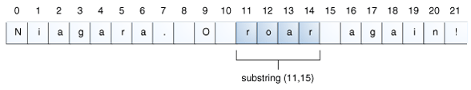

The following table lists the instance methods that all the subclasses of the Number class implement.
Each Number class contains other methods that are useful for converting numbers to and from strings and for converting between number systems. The following table lists these methods in the Integer class. Methods for the other Number subclasses are similar:
System.out.format(.....);
public PrintStream format(String format, Object... args)
where format is a string that specifies the formatting to be used and args is a list of the variables to be printed using that formatting. A simple example would be
System.out.format("The value of " + "the float variable is " + "%f, while the value of the " + "integer variable is %d, " + "and the string is %s", floatVar, intVar, stringVar);
The first parameter, format, is a format string specifying how the objects in the second parameter, args, are to be formatted. The format string contains plain text as well as format specifiers, which are special characters that format the arguments of Object... args. (The notation Object... args is called varargs, which means that the number of arguments may vary.)
Format specifiers begin with a percent sign (%) and end with a converter. The converter is a character indicating the type of argument to be formatted. In between the percent sign (%) and the converter you can have optional flags and specifiers. There are many converters, flags, and specifiers, which are documented in java.util.Formatter
Here is a basic example:
int i = 461012; System.out.format("The value of i is: %d%n", i);
The %d specifies that the single variable is a decimal integer. The %n is a platform-independent newline character. The output is:
The value of i is: 461012
The printf and format methods are overloaded. Each has a version with the following syntax:
public PrintStream format(Locale l, String format, Object... args)
To print numbers in the French system (where a comma is used in place of the decimal place in the English representation of floating point numbers), for example, you would use:
System.out.format(Locale.FRANCE, "The value of the float " + "variable is %f, while the " + "value of the integer variable " + "is %d, and the string is %s%n", floatVar, intVar, stringVar);
An Example
The following table lists some of the converters and flags that are used
| Converter |
Flag |
Explanation |
| d |
|
A decimal integer. |
| f |
|
A float. |
| n |
|
A new line character appropriate to the platform running the application. You should always use %n, rather than \n. |
| tB |
|
A date & time conversion—locale-specific full name of month. |
| td, te |
|
A date & time conversion—2-digit day of month. td has leading zeroes as needed, te does not. |
| ty, tY |
|
A date & time conversion—ty = 2-digit year, tY = 4-digit year. |
| tl |
|
A date & time conversion—hour in 12-hour clock. |
| tM |
|
A date & time conversion—minutes in 2 digits, with leading zeroes as necessary. |
| tp |
|
A date & time conversion—locale-specific am/pm (lower case). |
| tm |
|
A date & time conversion—months in 2 digits, with leading zeroes as necessary. |
| tD |
|
A date & time conversion—date as %tm%td%ty |
| |
08 |
Eight characters in width, with leading zeroes as necessary. |
| |
+ |
Includes sign, whether positive or negative. |
| |
, |
Includes locale-specific grouping characters. |
| |
- |
Left-justified.. |
| |
.3 |
Three places after decimal point. |
| |
10.3 |
Ten characters in width, right justified, with three places after decimal point. |
long n = 461012;
System.out.format("%d%n", n); // --> "461012"
System.out.format("%08d%n", n); // --> "00461012"
System.out.format("%tB %te, %tY%n", c, c, c); // --> "May 29, 2006"
System.out.format("%tl:%tM %tp%n", c, c, c); // --> "2:34 am" System.out.format("%tD%n", c); // --> "05/29/06"
The DecimalFormat Class
DecimalFormat myFormatter = new DecimalFormat(pattern);
String output = myFormatter.format(value);
System.out.println(value + " " + pattern + " " + output); }
...
customFormat("###,###.###", 123456.789);
customFormat("###.##", 123456.789);
customFormat("000000.000", 123.78); customFormat("$###,###.###", 12345.67); } }
The output is:
123456.789 ###,###.### 123,456.789
123456.789 ###.## 123456.79
123.78 000000.000 000123.780
12345.67 $###,###.### $12,345.67
The following table explains each line of output.
DecimalFormat.java Output
| Value |
Pattern |
Output |
Explanation |
| 123456.789 |
###,###.### |
123,456.789 |
The pound sign (#) denotes a digit, the comma is a placeholder for the grouping separator, and the period is a placeholder for the decimal separator. |
| 123456.789 |
###.## |
123456.79 |
The value has three digits to the right of the decimal point, but the pattern has only two. The format method handles this by rounding up. |
| 123.78 |
000000.000 |
000123.780 |
The pattern specifies leading and trailing zeros, because the 0 character is used instead of the pound sign (#). |
| 12345.67 |
$###,###.### |
$12,345.67 |
The first character in the pattern is the dollar sign ($). Note that it immediately precedes the leftmost digit in the formatted output. |
The String class has thirteen constructors that allow you to provide the initial value of the string using different sources, such as an array of characters:
char[] helloArray = { 'h', 'e', 'l', 'l', 'o', '.' };
String helloString = new String(helloArray); System.out.println(helloString);
or
String fs; fs = String.format("The value of the float " +
"variable is %f, while " +
"the value of the " +
"integer variable is %d, " +
" and the string is %s",
floatVar, intVar, stringVar);
Converting Strings to Numbers
float a = (Float.valueOf(args[0])).floatValue();
float b = (Float.valueOf(args[1])).floatValue();
Converting Numbers to Strings
int i;
double d;
String s3 = Integer.toString(i);
String s4 = Double.toString(d);
Getting Characters and Substrings by Index
String anotherPalindrome = "Niagara. O roar again!"; char aChar = anotherPalindrome.charAt(9);

Indices begin at 0, so the character at index 9 is 'O', as illustrated in the following figure:

String anotherPalindrome = "Niagara. O roar again!";
String roar = anotherPalindrome.substring(11, 15);
For more detail, check out here
The StringBuffer and StringBuilder Classes
Java’s StringBuffer and StringBuilder classes represent strings that can be dynamically modified. They are nearly the same, there is only one difference between them:
- StringBuffer is threadsafe.
- StringBuilder (introduced in 5.0) is not threadsafe (no guarantee of synchronization).
The StringBuffer class does not override the version of equals() that it inherits from Object. Thus the method returns true only when comparing references to the same single object. If two distinct instances encapsulate identical strings, equals() will return false.
String Concatenation the Easy Way
2 ways:
- String.concat() method of the String class and the StringBuffer.append().
- Overloaded + operator.
Autoboxing and Unboxing
Autoboxing is the automatic conversion that the Java compiler makes between the primitive types and their corresponding object wrapper classes. For example, converting an int to an Integer, a double to a Double, and so on. If the conversion goes the other way, this is called unboxing.
Here is the simplest example of autoboxing:
Converting an object of a wrapper type (Integer) to its corresponding primitive (int) value is called unboxing. The Java compiler applies unboxing when an object of a wrapper class is:
- Passed as a parameter to a method that expects a value of the corresponding primitive type.
- Assigned to a variable of the corresponding primitive type.
Autoboxing and unboxing lets developers write cleaner code, making it easier to read. The following table lists the primitive types and their corresponding wrapper classes, which are used by the Java compiler for autoboxing and unboxing:
| Primitive type |
Wrapper class |
| boolean |
Boolean |
| byte |
Byte |
| char |
Character |
| float |
Float |
| int |
Integer |
| long |
Long |
| short |
Short |
| double |
Double |